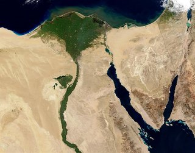
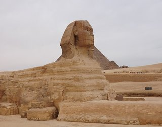
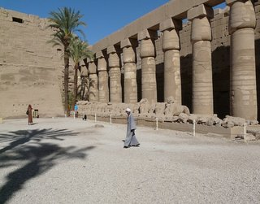

 Histories were transmitted orally, in performance and from one generation of specialists to the next. While some narratives, such as those detailing the origins of a nation or royal lineage, were mythic in scope, others were much more prosaic and might have concerned legal codes or accounts of village or clan history. Some historical texts, especially epics, were components of greater performance traditions in which the verbal artistry of the narrator was as significant as the story itself. Performers were encouraged to manipulate their medium for the most pleasing results, although the basic story remained the same. In contrast, texts that concerned legal matters or dynastic lists, in which verbal accuracy was of paramount importance, were learned by rote so that even the original words were preserved. This practice often conserved archaic or formalized language that required interpretation by specialists, and the cryptic qualities of the texts added to their aura of importance. African historians frequently used aids to help them recall and organize the extensive amounts of information with which they were entrusted. Musical accompaniment, for instance, not only enhanced a performance but also helped to pace and structure the narrative.
 The kora and ngoni are two stringed instruments played by the Mande jeliw during their presentations of great heroic epics. Lamellophones ("thumb pianos") also provided a musical component to historical recitations. An important work by a Chokwe master from what is today Angola or the Democratic Republic of Congo neatly demonstrates this intersection of music and historical narrative. It portrays the legendary culture hero Chibinda Ilunga playing a lamellophone, the very instrument whose notes would have accompanied the numerous historical sagas of which he was the subject. A memory aid could also be visual, its composition evoking the structure and content of the narrative it represented. One of the most intricate of these visual memory devices was the lukasa used by the mbudye association of the Luba peoples from what is now Democratic Republic of Congo. The mbudye association was responsible for protecting and sustaining Luba political and historical principles, which they conveyed to the rest of Luba society through performances and artworks. As its members graduated from one level of the association to the next, their knowledge became ever more profound. At its apex, members learned to read the lukasa and utilize the information it held. To the uninitiated, a lukasa appeared to be nothing more than a flat piece of wood covered with pins and brightly colored beads or intricately carved human heads and incised geometric patterns. However, each board contained a wealth of information about the history of the chiefdom, genealogical records of the ruler and titleholders, medicinal practices, and information about geographic landmarks of social, political, and religious importance.
 The Nile has been the lifeline of its region for much of human history. The fertile floodplain of the Nile gave humans the opportunity to develop a settled agricultural economy and a more sophisticated, centralized society that became a cornerstone in the history of human civilization. Egypt's impact on later cultures was immense. You could say that Egypt provided the building blocks for Greek and Roman culture, and, through them, influenced all of the Western tradition. Today, Egyptian imagery, concepts, and perspectives are found everywhere; you will find them in architectural forms, on money, and in our day to day lives. Many cosmetic surgeons, for example, use the silhouette of Queen Nefertiti (whose name means “the beautiful one has come”) in their advertisements. Ancient Egyptian civilization lasted for more than 3000 years and showed an incredible amount of continuity. That is more than 15 times the age of the United States, and consider how often the culture shifts; less than 10 years ago, there was no Facebook, Twitter, or Youtube. While today we consider the Greco-Roman period to be in the distant past, it should be noted that Cleopatra VII's reign (which ended in 30 BCE) is closer to our own time than it was to that of the construction of the pyramids of Giza. It took humans nearly 4000 years to build something taller than the Great Pyramids. Contrast that span to the modern era; we get excited when a record lasts longer than a decade.